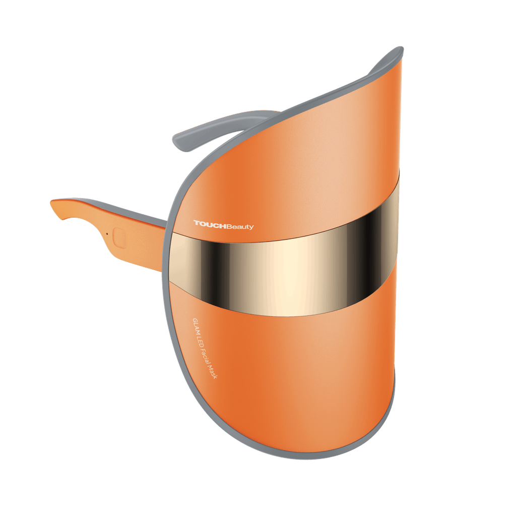

625 nmluce rossared light 415 nmluce blublue light 590 nmluce ambraamber light 84LEDFoglioSheet 1rdieci minuti
VELO
Maschera a luce LED per il visoLED light face mask
Un velo di luce che copre tutto il viso. Tre colori per tre esigenze: rosso per tono ed elasticità, blu per la pelle impura, ambra per rossori e incarnato spento. Leggera, senza fili, si accende quando la indossi.A veil of light over the whole face. Three colours for three needs: red for tone and elasticity, blue for blemish-prone skin, amber for redness and dullness. Lightweight and cordless, it switches on when you wear it.
- SedutaSession
- 10′
- LuciLights
- 3
- LED
- 84